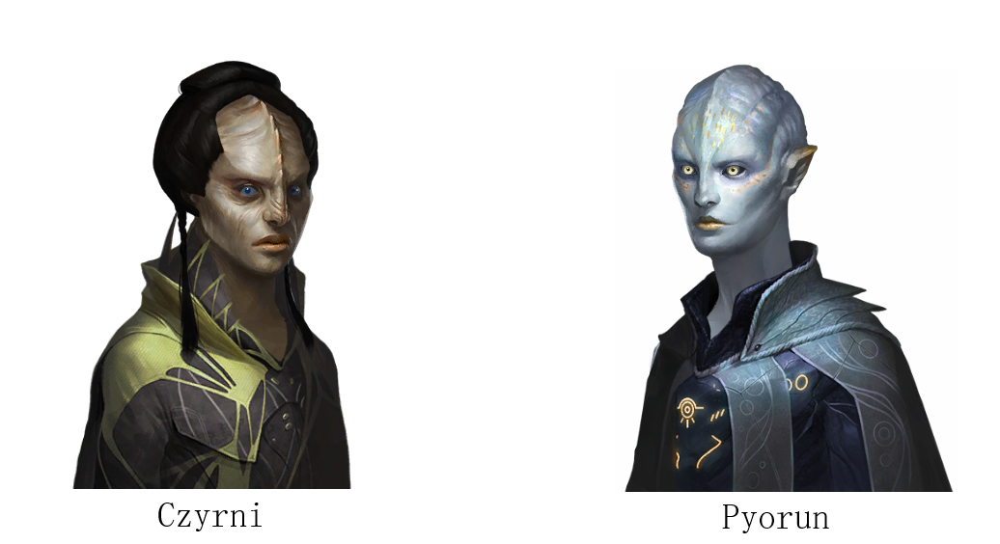

The Mutual History of the Cyrzni and the Pyorun

This blog post contains imagery from Stellaris by Paradox Interactive.
The Pyorun and the Cyrzni are two humanoid alien species that occupy different life-holding worlds in the Ztaltha. They occupy the worlds of Dlenitz, and Abyzh, respectively. The 2 alien races discovered each other due to a resource crisis on the Cyrzni homeworld of Abyzh. Space travel was a seen as way to solve the resource crisis on Cyrzni as it was theorized the green planet of Delnitz that orbited next to theirs to be full of resources. There was just one problem, the Pyorun who lived on Dlenitz. The Pyorun, at the time, were engaged in a planet-wide total war between competing economic alliances.
They had detected radiowaves from the Cyrzni homeworld earlier in their history, and the Cyrzni.